GASOK · GIWA 체인 액셀러레이터
걸음 수로 포인트를 쌓고, 그 포인트를 GIWA 체인 위 볼트에 예치해 이자를 받는 앱이다. 지갑 생성 · 가스 · 서명은 앱과 백엔드가 처리하므로 유저는 이 과정을 보지 않는다.
이 문서는 아키텍처와 기술 구현을 다룬다. 제품 방향 · 시장 · 팀은 피칭덱을 참고.
01 · 로그인
유저가 하는 일은 "구글로 계속하기" 한 번이다. 그 뒤에 지갑이 만들어지고 서버에 등록되지만 화면에는 나오지 않는다.

| 단계 | 내용 |
|---|---|
| 로그인 | Dynamic이 구글 OAuth를 진행하고 자기 이름으로 서명한 JWT를 돌려준다 |
| 지갑 | 그 계정의 EVM 지갑이 없으면 만들고, 있으면 share에서 복구한다. 계정당 한 번뿐이다 |
| 검증 | 백엔드가 발급자 JWKS로 iss·exp·서명을 확인하고 sub로 유저를 UPSERT한 뒤 자체 세션 JWT를 발급한다. 이후 모든 API는 이 토큰으로 돈다 |
| 바인딩 | GET /wallet/address로 서버가 아는 주소를 먼저 확인한다. 없으면 챌린지를 받아 앱이 서명하고 POST /wallet/bind로 등록한다. 이미 있으면 기기 주소와 대조만 한다 |
| 항목 | 내용 |
|---|---|
| 키 보관 | TSS-MPC로 share를 나눠 보관하고, 서명할 때도 키를 한 곳에 합치지 않는다 |
| 서버가 아는 것 | 주소뿐이다. 스키마에 개인키 컬럼 자체가 없다 |
| 예치 서명 | EIP-712 페이로드는 서버가 만들고 서명은 앱이 한다. 릴레이어가 대신 제출한다 |
| 출금 | 가스는 어느 쪽이든 유저가 내지 않는다. 현행 볼트는 msg.sender 지분을 태우는 구조라 앱이 직접 보내고 서버가 그만큼 ETH를 선지급하며, 새로 배포한 볼트는 서명만 받아 릴레이어가 제출한다 |
| 복구 | share가 구글 계정에 묶여 있어, 앱을 지우거나 기기를 바꿔도 같은 계정으로 로그인하면 같은 주소가 돌아온다 |
| 벤더 교체 | 앱이 지갑을 WalletProvider 인터페이스 뒤에 격리했다. 인증이 지갑에 묶여 있지 않아 구현체를 갈아끼워도 계정과 원장은 유지된다 |
주소 등록은 소유 증명으로 한다. 앱이 챌린지에 서명하면 서버가 서명에서 주소를 복구해
제출된 주소와 대조한 뒤 저장한다. 클라이언트가 보낸 주소를 그대로 믿지 않는다.
지갑이 없으면 저금이 409 WALLET_NOT_BOUND로 막히고, 서버가 대신 만들어주지 않는다.
앱 데이터를 전부 지우고 같은 구글 계정으로 다시 로그인해 확인했다. 같은 주소가 돌아왔고 바인딩 시각도 처음 값 그대로였다. 새로 만든 게 아니라 복구된 것이다.
02 · 예치
유저가 "저금하기"를 한 번 누르면 아래 과정이 진행된다. 화면에는 이 중 아무것도 나오지 않는다.

| 단계 | 내용 |
|---|---|
| 환산 | 1P = 1,000 units(스테이블 6 decimals). 5,000P는 5 USDC 상당이다. 총액을 반반으로 쪼갠다 |
| 서명 | 앱이 DepositAuth{user, amount0, amount1, nonce, deadline}에 EIP-712 서명을 한다. 서버에는 서명할 키가 없다 |
| 제출 위임 | 컨트랙트가 msg.sender를 검사하지 않으므로, 누가 제출하든 지분은 서명한 유저에게 발행된다 |
| 양쪽 레그 | LP는 두 토큰이 다 필요하다. 유저가 USDC만 넣고 나드리가 USDT를 대는 구조가 아니라, 유저 자본을 나눠 양쪽 모두 유저 몫으로 넣는다 |
| 예치 | depositFor로 지분이 유저 주소에 발행된다. 가스는 릴레이어가 내므로 유저 ETH는 0원이어도 된다 |
| 유동성 투입 | 예치는 유휴로 받고 레인지 투입은 키퍼가 따로 한다(deployLiquidity). 매 예치마다 풀을 건드리면 가스와 슬리피지가 유저에게 전가되고, 떼어놓으면 소액 예치를 모아서 한 번에 넣을 수 있다 |

harvest()는 퍼미션리스다. 나드리가 정산을 돌리지 않아도 제3자가 부를 수 있어 그만큼 신뢰 가정이 줄어든다.
다만 harvestInterval 쿨다운이 있어 연속 호출은 HarvestTooSoon으로 되돌아간다.withdraw(shares)로 지분을 소각하고 두 토큰을 회수해 포인트로 되돌린다.
출금을 막거나 지연시키는 로직은 컨트랙트에 없다. 가스 부담까지 예치와 대칭으로 맞춘 것이 04절의 withdrawWithSig다.유저 화면에는 "저금하기" 한 번, 올라가는 숫자, "그만 받기" 한 번만 있다. 체인 · 가스 · 시드문구 · 스왑 같은 단어는 UI에서 쓰지 않는다.
03 · 아키텍처

Σdelta다.
반대로 저금 현재가치는 DB에 적립하지 않고 체인에서 convertToAssets로 읽는다.
DB에 이자를 쌓으면 체인 값과 갈라져 출금할 때 자산이 모자란다.04 · 온체인 기록
아래 수치는 전부 블록 탐색기에서 직접 조회한 값이다.
| 컨트랙트 | 역할 | 주소 |
|---|---|---|
| NaduriVault | ERC-4626 지분 볼트 — 현행 운영 | 0xD0b0…5914 |
| NaduriPositions | 유저별 v4 포지션 · 출금 서명 대납 | 0xBE50…e562 |
| FeeSplitter | 프로토콜 수수료 5:5 분배 | 0x9F30…c85b |
| PoolManager | Uniswap v4 코어 | 0xCdf0…8769 |
| MockUSDC / MockUSDT | 테스트넷 스테이블 페어 | 0x1B55…7e8a ·
0x2A84…EA45 |
여섯 개 전부 블록 탐색기에서 소스 코드를 그대로 읽을 수 있다.
| 무엇 | 트랜잭션 |
|---|---|
| 앱에서 저금 — 앱이 서명하고 릴레이어가 가스를 냄 | 0xb7482741… |
| 앱에서 출금 — 지분 소각 후 두 토큰 회수 | 0xf57b0ae4… |
| 수수료 정산 — 가장 최근 harvest | 0x8b7dad6d… |
| 유동성 투입 — deployLiquidity | 0x13e454db… |
첫 번째 트랜잭션의 Deposited 이벤트를 열면 caller는 릴레이어 주소이고
owner는 유저 지갑 주소다. 가스와 제출은 나드리가 했지만 지분은 앱이 서명한
주소로 발행됐다. 서버는 그 서명을 만들 수 없다.
harvest가 30회 실행됐다. 회수할 수수료가 계속 쌓이고 있다는 뜻이다.
스왑이 풀에서 거래를 만들고, 볼트가 그 수수료를 회수해 절반은 트레저리로 보내고
절반은 볼트에 남겨 좌당 가치를 올린다.
| 함수 | L2 gasUsed | 관측 | 누가 겪나 |
|---|---|---|---|
deposit | 149,425 | 1회 | 부트스트랩 |
depositFor | 111,471 ~ 145,671 | 13회 | 유저 예치 — 가스는 릴레이어 부담 |
withdraw | 187,425 ~ 221,625 | 5회 | 유저 출금 |
harvest | 139,200 ~ 190,500 | 30회 | 키퍼 정산 |
deployLiquidity | 269,946 | 1회 | 키퍼 레인지 투입 |
depositFor 1건당 수수료는 평균 1.47 × 10⁻⁷ ETH다.
테스트넷 기준으로 가치 이동 1건당 수 원 이하이고, 소액 예치가 성립하는 비용 구조다.
메인넷은 다르다. GIWA는 OP Stack이라 비용이 L2 실행가스 + L1 데이터 수수료로 나뉜다. 지금은 L1이 Sepolia라 L1분이 작지만 메인넷은 L1이 이더리움이므로 이 부분이 커진다. 자릿수는 유지될 것으로 보지만 위 수치를 그대로 약속하지는 않는다.
위 표에서 depositFor는 릴레이어가 내지만 withdraw는 유저가 낸다.
이 비대칭 때문에 앱 테스트 중 지갑에 ETH가 모자라 출금이 out of gas로 실패한 적이 있다.
지금은 서버가 출금 직전에 필요한 만큼 ETH를 보내 막고 있지만, 우회일 뿐이다.
비대칭을 없앤 볼트를 새로 배포했다. 유저는 WithdrawAuth{user, liquidity, nonce, deadline}에
서명만 하고 withdrawWithSig는 릴레이어가 제출한다. 예치와 같은 구조다.
수령인 파라미터를 두지 않아 대금은 항상 서명자 본인에게 간다 — 릴레이어 키가 털려도
남의 출금을 다른 주소로 돌릴 수 없다. 검증 게이팅도 걸지 않았다. 출구는 어떤 경우에도 열려 있어야 한다.
같은 금액을 넣은 두 유저로 GIWA Sepolia에서 돌린 결과다. ETH 잔고가 0인 userA가 전액 출금했고, 가스를 한 wei도 쓰지 않았다.
| 시점 | userA | userB |
|---|---|---|
| 출금 전 유동성 | 1356356076 | 1356356076 |
| 출금 전 가치 | 39.999998 | 39.999998 |
| userA 전액 출금 후 | 가치 0, 지갑에 USDC·USDT 각 19.999999 |
유동성 1356356076 · 가치 39.999998 — 단위까지 그대로 |
| userA가 쓴 ETH | 0 | — |
유저마다 v4 포지션을 따로 갖기 때문에 나온 결과이기도 하다.
포지션 키는 keccak(owner, tickLower, tickUpper, salt)이고 salt에 유저 주소를 넣으면
컨트랙트 하나가 서로 닿지 않는 포지션을 유저 수만큼 갖는다. 공유 볼트에서 비례배분으로만 참이던
"한 사람의 출금이 다른 사람 돈을 건드리지 않는다"가 여기서는 자금이 물리적으로 분리돼 성립한다.
리밸런싱도 임계값과 레인지 폭이 배포 시 고정된 퍼미션리스 함수라 owner조차 재량이 없다.
앱과 백엔드는 아직 현행 볼트를 쓴다. 지분 토큰이 사라지면 포인트 저금과 원화 저금을
지분으로 나누던 회계(06절)가 성립하지 않아, salt에 트랙까지 섞어 포지션을 나누는 작업이 먼저다.
위 트랜잭션 목록과 가스 수치는 현행 볼트 기준이고, 이 표는 새 볼트를 직접 실행한 값이다.
05 · 설계 근거
balanceOf로 체인에 그대로 있어서, 서비스가 숫자를 부풀릴 수 없다
컨트랙트가 msg.sender를 검사하지 않는다. 서명만 유효하면 누가 제출하든
결과는 서명한 유저에게 간다. 그래서 백엔드가 대신 제출하는 것만으로 충분하다.
유저 지갑에 ETH가 0원이어도 동작하고, Paymaster도 번들러도 필요 없다.
GIWA 페이마스터를 기다리지 않은 이유이기도 하다. 문서상 아직 지원 예정이고, 예정된 방식은 스테이블코인으로 가스를 내는 토큰 결제형이라 앱이 대신 내주는 스폰서형과 다르다. 나오더라도 비용은 결국 나드리가 진다. 그러면 릴레이어와 결과가 같다.
이 구조를 출금에도 그대로 적용했다. 예치만 대납하고 출금은 유저가 내는 상태는
"가스를 보여주지 않는다"는 원칙이 절반만 지켜진 것이었다.
withdrawWithSig는 유저 서명과 릴레이어 제출로 나머지 절반을 채운다(04절).
_update에서 민팅과 소각 외의 전송을 TransferDisabled로 막았다.
balanceOf는 정상 동작하므로 지갑에서는 보인다.
나중에 여는 것보다 닫는 쪽이 어렵기 때문에 닫고 시작했다.
USDC/USDT는 가격이 붙어 있어 비영구적 손실이 거의 없다. 원금이 변동 자산이면 "이자가 붙었는데 원금이 줄었다"는 상황이 생기는데, 첫 디파이 경험에서는 그것을 피하는 편이 낫다고 봤다. 대신 APR은 낮다.
06 · 장애 대응
포인트가 실물 가치로 나가는 제품이라, 정상 동작보다 틀렸을 때 무엇이 벌어지는지를 기준으로 설계했다.
저금은 온체인 예치가 성공한 뒤에 DB를 커밋한다. 반대로 하면 체인이 실패했는데 포인트만 사라진다.
릴레이어를 끄고 저금을 시도하면 503이 떨어지고 잔액은 그대로 남는다.
실제로 확인한 동작이다.
Idempotency-Key를 받고, 같은 키가 오면 저장된 응답을 그대로 돌려준다.
모바일은 네트워크가 끊기면 자동으로 재시도하기 때문에, 이게 없으면 재시도가 곧 이중 적립이다.(user_id, 날짜) 유니크 제약으로 막는다.
동시 요청 두 개가 같이 통과하는 경합이 원리적으로 불가능해진다.balanceOf가 옛 값으로 읽히는 지연이 실제로 있어서,
지분은 Deposited 이벤트에서 읽고 잔고는 재시도한다
포인트와 원화 원장은 append-only이고 잔액은 Σdelta다.
잔액 컬럼이 없으므로 원장과 어긋난 잔액이라는 상태가 생길 수 없고,
"왜 이 숫자가 됐는지"는 언제나 되짚을 수 있다.
저금 현재가치는 반대로 DB에 적립하지 않고 체인에서 읽는다. DB에 이자를 쌓으면 체인 값과 갈라져 출금할 때 자산이 모자란다.
포인트 저금과 원화 저금이 같은 지갑, 같은 볼트를 쓴다.
볼트 지분은 주소 단위라 체인만 봐서는 구분되지 않는다. 그래서 각 트랙이
자기 지분(shares)을 따로 기록하고, 예치와 해제와 이자 조회를 전부 그 지분 기준으로 한다.
주소 전체로 읽으면 상대 트랙의 원금이 자기 이자로 잡히고, 전량 소각하면 먼저 해제하는 쪽이 상대 몫까지 가져간다. 둘 다 회귀 테스트로 고정해 두었다.
온체인 접점이 게이트웨이 하나뿐이라, 테스트는 그것을 가짜로 주입해 체인 없이 전 구간을 검증한다. 볼트를 흉내 낸 가짜도 ERC-4626과 같은 방식으로 동작해서(지분 수는 그대로, 좌당 가치가 오름) 이자 배분까지 검증된다.
07 · GIWA
| 왜 L2인가 | 하루 수만 건의 소액 예치가 목표다. 메인넷 가스로는 성립하지 않는다 |
| 왜 GIWA인가 | 업비트 정산 레일과 맞닿아 있다. 포인트 → 현금 → 코인의 마지막 구간이 국내에서 닫힌다 |
| GIWA 월렛 탑재 | 지갑을 WalletProvider 인터페이스 뒤에 격리했다. SDK가 공개되면 구현체만 교체하면 되고 유저 계정과 원장은 그대로다 |
| Dojang 연동 | 볼트에 requireVerified 플래그 자리를 미리 만들어 뒀다(기본 false). KYC 게이팅이 필요해지면 켜기만 하면 된다 |
08 · 현재
| 파트 | 상태 |
|---|---|
| 온체인 | GIWA Sepolia 배포 · Verified. 예치 → 이자 → 출금 라이브 검증 완료. 출금까지 대납하는 볼트는 별도로 배포해 검증만 마친 상태다 |
| 백엔드 | FastAPI. 엔드포인트 27개, 테이블 10개, 자동 테스트 135개 |
| 앱 | Expo / React Native (Android). 화면 12개, 백엔드 연동 · 세션 유지 · 지갑 복구 완료 |
앱에서 로그인하고 저금한 뒤 출금하는 전 구간을 실제로 돌려서 확인했다. 위 트랜잭션 두 건이 그때 나온 것이다.
다음 단계는 유저별 포지션 볼트로의 전환(salt에 트랙을 넣어 두 트랙을 체인에서 나눈 뒤
백엔드를 지분 회계에서 떼어낸다), 거래량이 실재하는 풀로 교체(현재는 자체 풀이라 이자 재원이 제한적),
포인트샵과 자산 전환 백엔드, 메인넷 전환과 컨트랙트 감사다.